1032A12 TIMING SYSTEM DRIVE CHAIN - R.R
- Path
- Procedures > 10 ENGINE > 1032 TIMING SYSTEM > 1032A CHAIN TIMING SYSTEM > 1032A12 TIMING SYSTEM DRIVE CHAIN - R.R
- Kind
- repair procedure (removal / refitting; the operation number is the code)
- Applies to
- engines: 2.2 JTS, 3.2 JTS; all production periods
- Interactive page
- https://sloeber94.github.io/elrnDB-aBrrSpdr/en/#/946001857
Applies to: engines: 2.2 JTS; all production periods
 Removing
Removing
 Refitting
Refitting- Position the vehicle on a lift.
- Make sure that the ignition key is in the OFF position, then disconnect the battery terminal (-).
Description | Connector | |
|---|---|---|
- | Battery |
Op. 1048A28 VACUUM AIR CIRCUIT RESONATOR PIPE - R+R
- Using a suitable syringe, draw off the power assisted steering fluid from the reservoir.
1. Undo the connector (1a) and disconnect the supply pipe from the pump to the power assisted steering box (1b), power assisted steering pump side.
2. Loosen the band and disconnect the supply pipe from the power assisted steering fluid reservoir to the pump, power assisted steering pump side.
3. Loosen the band and disconnect the return pipe from the heat exchanger to the power assisted steering fluid reservoir, reservoir side.
4. Undo the bolts (4a) and remove the power assisted steering fluid reservoir (4b) complete with pipe (4c).
5. Loosen the band and disconnect the coolant return pipe.
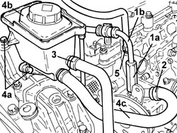
Applies to: engines: 2.2 JTS; all production periods
1. Disconnect the electrical connections (1a) and (1b) from the phase transformer electromagnets.
Description | Connector | |
|---|---|---|
1a | Exhaust side phase transformer solenoid valve |
Description | Connector | |
|---|---|---|
1b | Inlet side phase transformer solenoid valve |
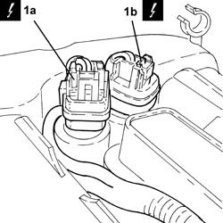
Applies to: engines: 2.2 JTS; all production periods
1. Disconnect the electrical connections (1a) and (1b) from the cam angle sensors.
Description | Connector | |
|---|---|---|
1a | Exhaust side timing sensor |
Description | Connector | |
|---|---|---|
1b | Inlet side timing sensor |
2. Disconnect the electrical connections from the electronic power module.
Description | Connector | |
|---|---|---|
2 | Ignition coil |
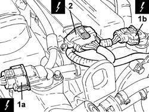
Applies to: engines: 2.2 JTS; all production periods
1. Disconnect the electrical connection from the engine coolant temperature sensor.
Description | Connector | |
|---|---|---|
1 | Engine coolant temperature sensor/sender unit |
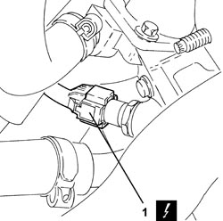
Applies to: engines: 2.2 JTS; all production periods
- Release the engine electrical wiring from the securing bands and move it aside.
1. Undo the bolts (1a) and remove the electronic power module (1b).
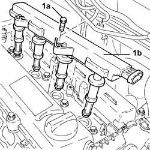
Applies to: engines: 2.2 JTS; all production periods
1. Undo the bolts (1a) and remove the tappet cover (1b) complete with gaskets.
2. Unscrew the timing system hydraulic tensioner and remove.
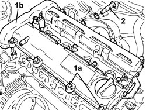
Applies to: engines: 2.2 JTS; all production periods
- Remove the spark plugs to facilitate the subsequent engine cranking operations.
1. Rotate the crankshaft until cylinder no. 4 is at T.D.C. in the explosion stroke; in this condition the reference (1a) on the inner part of the crankshaft pulley should be in line with the reference (1b) on the timing chain cover.
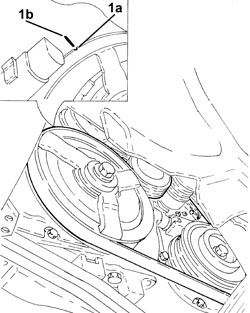
Applies to: engines: 2.2 JTS; all production periods
1. Undo the bolts (1a) and disconnect the intermediate exhaust pipe (1b), exhaust manifold side with the catalytic converter.
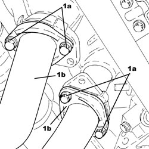
Applies to: engines: 2.2 JTS; all production periods
1. Undo the bolts (1a) and remove the phase transformer electromagnets (1b).
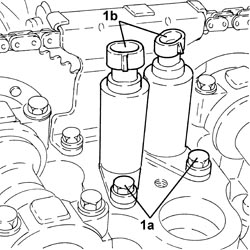
Applies to: engines: 2.2 JTS; all production periods
1. Undo the bolts (1a) and remove the upper timing chain tensioner pad (1b).
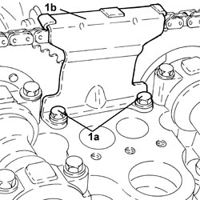
Applies to: engines: 2.2 JTS; all production periods
1. Support the engine using a hydraulic hoist fitted with suitable chains attached to the brackets on the actual engine.
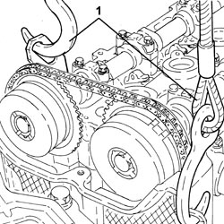
Applies to: engines: 2.2 JTS; all production periods
1. Undo the bolts (1a), (1b) and remove the flexible mounting for the power unit timing side front support (1c) complete with power assisted steering fluid reservoir mounting bracket (1d).
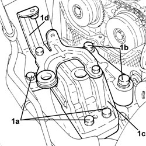
Applies to: engines: 2.2 JTS; all production periods
- Raise the engine as necessary using the hydraulic hoist.
1. Undo the access cap to the belt tensioner pad upper fixing bolt.
- Undo the upper fixed belt tensioner fixed pad fixing bolt.
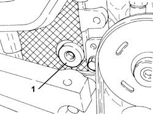
Applies to: engines: 2.2 JTS; all production periods
1. Undo the camshaft phase transformer fixing bolts.
2. Remove the camshaft phase transformers.
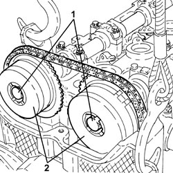
Applies to: engines: 2.2 JTS; all production periods
Op. 4450B04 RIGHT FRONT WHEEL - R.R
Op. 7055B66 ENGINE COMPARTMENT DUST COVER IN RIGHT FRONT WHEEL ARCH - R.R.
Op. 1092G10 SINGLE ENGINE BELT - R.R
Op. 1092A10 CRANKSHAFT PULLEY - R + R
Op. 1092G14 ENGINE COMPONENT SINGLE BELT MOVING TENSIONER - R + R
1. Undo the bolts (1a) and remove the crankshaft oil seal front cover (1b).
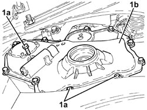
Applies to: engines: 2.2 JTS; all production periods
1. Remove the crankshaft front oil seal cover (1a) destructively by cutting through points (1b) shown in the figure.
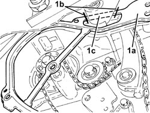
Applies to: engines: 2.2 JTS; all production periods
- Working at the bench, remove the oil seal from the timing chain cover.
1. Undo the lower bolt (1a) and remove the timing fixed tensioner pad (1b).
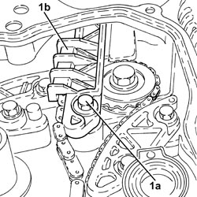
Applies to: engines: 2.2 JTS; all production periods
1. Undo the belt tensioner mobile pad fixing bolt.
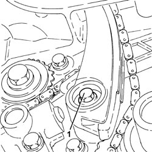
Applies to: engines: 2.2 JTS; all production periods
- Release the timing chain from the toothed drive pulley.
1. Remove the mobile chain tensioner pad.
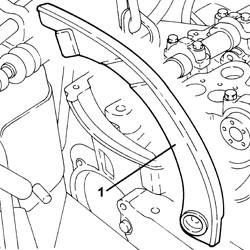
Applies to: engines: 2.2 JTS; all production periods
- Remove the timing chain.
Applies to: engines: 2.2 JTS; all production periods
Refitting
Removing- Tighten the plug for access to the upper bolt securing the chain tensioner fixed pad.
Component | Fastening | dia | Value (daNm) | Validity |
|---|---|---|---|---|
Cap for timing fixed chain tensioner pad upper bolt | - | M22 | 6.5 | 1.9 JTS 2.2 JTS |
1. Place the inlet side camshaft phase transformer (1a) in its housing and secure it using a new bolt (1b) without tightening it.
2. Turn the crankshaft until cylinder 4 is at TDC in the combustion phase, white notch stamped on the timing chain toothed drive pulley turned down and key upward.
3. Fit the timing chain.
4. Place the exhaust side camshaft phase transformer (4a) in its housing and secure it using a new bolt (4b) without tightening it.
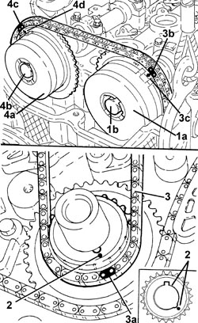
Applies to: engines: 2.2 JTS; all production periods
- The following drawing shows the fixed timing chain hydraulic tensioner disassembled.
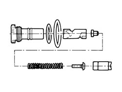
Applies to: engines: 2.2 JTS; all production periods
- Before it is possible to refit the timing fixed hydraulic tensioner it must be pre-loaded as described below.
1. Position the piston in a vice with protective jaws, holding it by the square end.
2. Insert the piston into the tensioner case by pressing and turning as shown in the figure until the pin (2a) fits into the groove (2b).
3. Press and simultaneously turn the piston until the pin (3a) fits into the groove (3b).
- Insert the assembled piston into the tensioner body.
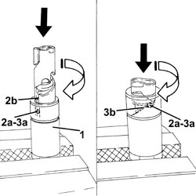
Applies to: engines: 2.2 JTS; all production periods
1. Refit the timing chain hydraulic tensioner into its seat and tighten to the specified torque.
Component | Fastening | dia | Value (daNm) | Validity |
|---|---|---|---|---|
Fixed hydraulic timing system tensioner | - | M27 | 7.5 | 1.9 JTS 2.2 JTS |
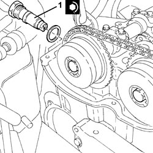
Applies to: engines: 2.2 JTS; all production periods
1. Move the timing chain hydraulic tensioner to operating position by exercising overall pressure by hand on the chain in the area shown in the figure. This puts the chain under tension, which in turn acts on the mobile pad to release the mobile tensioner piston.
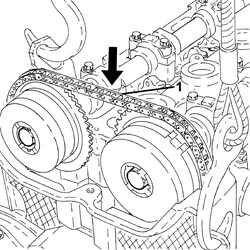
Applies to: engines: 2.2 JTS; all production periods
- Rotate the crankshaft through 720°, then turn the crankshaft until cylinder 4 is at TDC in the combustion phase, white notch stamped on the timing chain toothed drive pulley turned down and key upward.
- Check the timing making sure that the timing references correspond.
1. Place the upper timing chain pad (1a) in its housing and fasten it tightening the bolts (1b) to the recommended torque.
Component | Fastening | dia | Value (daNm) | Validity |
|---|---|---|---|---|
Timing upper chain tensioner pad | Bolt | M6 | (cylinder head side) 1.0 | 1.9 JTS 2.2 JTS |
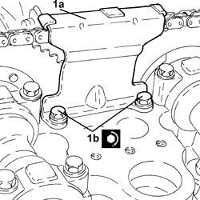
Applies to: engines: 2.2 JTS; all production periods
1. Tighten the bolts fixing the camshaft phase transformers to the recommended torque tightening the exhaust side phase transformer bolt first.
Component | Fastening | dia | Value (daNm) | Validity |
|---|---|---|---|---|
Camshaft variable valve timing | Bolt | M11 | (camshaft side) 9.0 - 11.0 | 1.9 JTS 2.2 JTS |
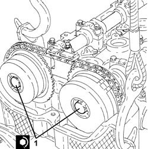
Applies to: engines: 2.2 JTS; all production periods
- Refit the timing chain provisionally in its seat.
- Refit the chain tensioner mobile pad.
1. Tighten the bolt fixing the mobile belt tensioner pad to the recommended torque.
Component | Fastening | dia | Value (daNm) | Validity |
|---|---|---|---|---|
Timing moving chain tensioner pad | Bolt | M6 | (engine block side) 1.0 | 1.9 JTS 2.2 JTS |
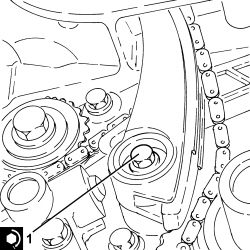
Applies to: engines: 2.2 JTS; all production periods
- Fit the spark plugs and tighten them to the recommended torque.
Component | Fastening | dia | Value (daNm) | Validity |
|---|---|---|---|---|
Spark plugs | - | M14 | (cylinder head side) 1.8 - 2.2 | 1.9 JTS 2.2 JTS |
- Clean the contact surfaces.
1. If the crankshaft oil seal front cover gasket has been removed, cut the section that remains attached to the rigid engine mount to allow installation.
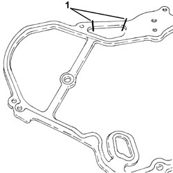
Applies to: engines: 2.2 JTS; all production periods
1. Refit the chain tensioner fixed pad (1a) and secure by tightening the lower bolt (1b) and upper bolt through the hole to the specified torque.
Component | Fastening | dia | Value (daNm) | Validity |
|---|---|---|---|---|
Timing fixed chain tensioner pad | Lower bolt | M6 | (engine block side) 1.0 | 1.9 JTS 2.2 JTS |
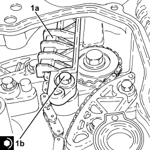
Applies to: engines: 2.2 JTS; all production periods
- Refit the crankshaft front oil seal cover gasket and arrange as shown above.
1. Place the crankshaft oil seal front cover (1a) in its housing and secure it tightening the bolts to the recommended torque tightening the lower ones first and then the upper ones.
Component | Fastening | dia | Value (daNm) | Validity |
|---|---|---|---|---|
Crankshaft oil seal front cover | Bolt | M8 | (engine block side) 2.1 | 1.9 JTS 2.2 JTS |
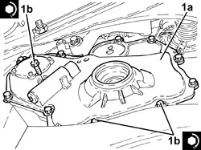
Applies to: engines: 2.2 JTS; all production periods
1. Fit a new oil seal (1a) on the timing chain cover using the tool (1b).
Tool | Description | Function | Validity |
|---|---|---|---|
1860099000 | Fitting tool | Fitting timing chain cover oil seal | 1.9 JTS 2.2 JTS |
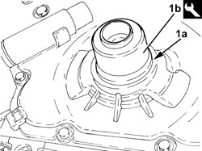
Applies to: engines: 2.2 JTS; all production periods
Op. 1092G14 ENGINE COMPONENT SINGLE BELT MOVING TENSIONER - R + R
Op. 1092A10 CRANKSHAFT PULLEY - R + R
Op. 1092G10 SINGLE ENGINE BELT - R.R
Op. 7055B66 ENGINE COMPARTMENT DUST COVER IN RIGHT FRONT WHEEL ARCH - R.R.
Op. 4450B04 RIGHT FRONT WHEEL - R.R
1. Place the timing side power unit front support flexible mounting (1a) in its housing complete with power assisted steering fluid reservoir mounting bracket (1b) and secure it tightening the bolts (1c) and (1d) to the recommended torque.
Component | Fastening | dia | Value (daNm) | Validity |
|---|---|---|---|---|
Timing side power unit rigid support flexible mounting | Bolt (to be replaced) | M12 | (rigid support side) 6.3 - 7.7 + 90° |
Component | Fastening | dia | Value (daNm) | Validity |
|---|---|---|---|---|
Timing side power unit rigid support flexible mounting | Bolt (to be replaced) | M12 | (bodyshell side) 6.3 - 7.7 + 90° |
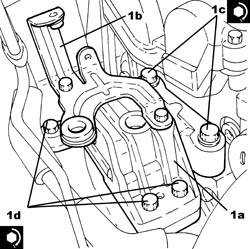
Applies to: engines: 2.2 JTS; all production periods
- Remove the hydraulic hoist fitted with suitable chains for supporting the engine.
1. Place the phase transformer electromagnets (1a) in their housings and secure them tightening the bolts (1b) to the recommended torque.
Component | Fastening | dia | Value (daNm) | Validity |
|---|---|---|---|---|
Phase transformer solenoids | Bolt | M6 | (cylinder head side) 1.0 | 1.9 JTS 2.2 JTS 3.2 JTS |
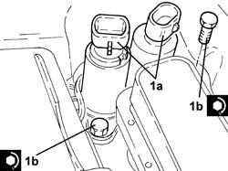
Applies to: engines: 2.2 JTS; all production periods
1. Connect the intermediate exhaust pipe (1b), exhaust manifold side with the catalytic converter and tighten the bolts (1b) to the recommended torque.
Component | Fastening | dia | Value (daNm) | Validity |
|---|---|---|---|---|
Intermediate exhaust pipe with flexible section | Bolt | M8 | (exhaust manifold side with catalytic converter) 2.2 - 2.6 | 1.9 JTS 2.2 JTS |
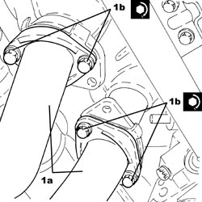
Applies to: engines: 2.2 JTS; all production periods
1. Place the tappet cover (1a) complete with gaskets in its housing and secure it tightening the bolts (1b) to the recommended torque.
Component | Fastening | dia | Value (daNm) | Validity |
|---|---|---|---|---|
Tappet cover | Bolt | M6 | (cylinder head side) 0.7 - 0.9 | 1.9 JTS 2.2 JTS |
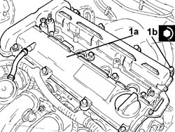
Applies to: engines: 2.2 JTS; all production periods
1. Place the electronic power module (1a) in its housing and secure it tightening the bolts (1b) to the recommended torque.
Component | Fastening | dia | Value (daNm) | Validity |
|---|---|---|---|---|
Ignition coil module | Bolt | M6 | (tappet cover side) 2.2 | 1.9 JTS 2.2 JTS |
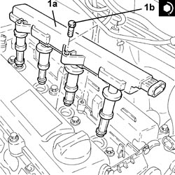
Applies to: engines: 2.2 JTS; all production periods
- Place the engine electrical wiring in position and fasten it with the bands.
- Connect the electrical connection to the engine coolant temperature sensor.
- Connect the electrical connections to the electronic power module.
- Connect the electrical connections to the cam angle sensors.
- Connect the electrical connections to the phase transformer electromagnets.
- Connect the coolant return pipe and tighten the band.
- Place the power assisted steering fluid reservoir complete with pipe in its housing and secure it using the bolts.
- Connect the return pipe from the heat exchanger to the power assisted steering fluid reservoir, reservoir side and tighten the band.
- Connect the supply pipe from the fluid reservoir to the power assisted steering pump, power assisted steering pump side, and tighten the band.
- Connect the supply pipe from the pump to the power assisted steering box , power assisted steering pump side, and tighten the connector to the recommended torque.
Component | Fastening | dia | Value (daNm) | Validity |
|---|---|---|---|---|
Supply pipe from pump to power assisted steering box | Connector | M16 | (power assisted steering pump side) 3.6 - 4.4 |
Op. 1048A28 VACUUM AIR CIRCUIT RESONATOR PIPE - R+R
- Connect the negative battery terminal (-).
Op. 0010T71 POWER STEERING FLUID CHECK LEVEL AND TOP UP IF NECESSARY
Op. 0010T75 HYDRAULIC POWER STEERING SYSTEM BLEED AIR
- Remove the vehicle from the lift.
Applies to: engines: 3.2 JTS; all production periods
Topics linked from this page (20)
- 0010T71 POWER STEERING FLUID CHECK LEVEL AND TOP UP IF NECESSARY
- 0010T75 HYDRAULIC POWER STEERING SYSTEM BLEED AIR
- 1004B10 POWER UNIT WITH MANUAL GEARBOX - R.R
- 1004D10 POWER UNIT (MANUAL GEARBOX), REMOVED, DISMANTLE AND REASSEMBLE
- 1004D40 ENGINE - POSITION ON STAND AND REMOVE
- 1004E10 ENGINE, REMOVED - REMOVE CYLINDER HEAD AND OIL SUMP FOR INSPECTION - INCLUDES POSITIONING ON STAND AND REMOVAL
- 1004E20 ENGINE - DISMANTLE AND REASSEMBLE FOLLOWING OPERATION 1004E10 - WASH AND CHECK DISMANTLED PARTS - REFIT CYLINDER HEAD AND OIL SUMP - DOES NOT INCLUDE REPAIRS TO CYLINDER HEAD AND AUXILIARY UNIT
- 1048A28 VACUUM AIR CIRCUIT RESONATOR PIPE - R+R
- 1092A10 CRANKSHAFT PULLEY - R + R
- 1092G10 SINGLE ENGINE BELT - R.R
- 1092G14 ENGINE COMPONENT SINGLE BELT MOVING TENSIONER - R + R
- 4450B04 RIGHT FRONT WHEEL - R.R
- 7055B66 ENGINE COMPARTMENT DUST COVER IN RIGHT FRONT WHEEL ARCH - R.R.
- A001 BATTERY
- A030 IGNITION COIL
- K036 ENGINE COOLANT TEMPERATURE SENSOR/SENDER UNIT
- K106 INTAKE SIDE TIMING SENSOR
- K107 EXHAUST SIDE TIMING SENSOR
- N092 PHASE SHIFTER SOLENOID VALVE ON INTAKE SIDE
- N093 PHASE SHIFTER SOLENOID VALVE ON EXHAUST SIDE